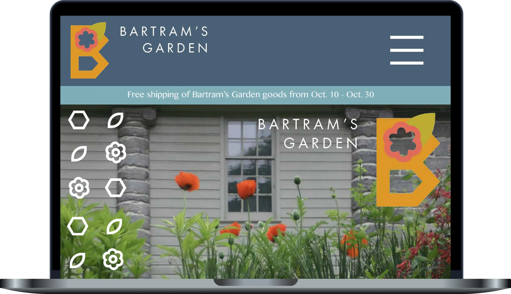
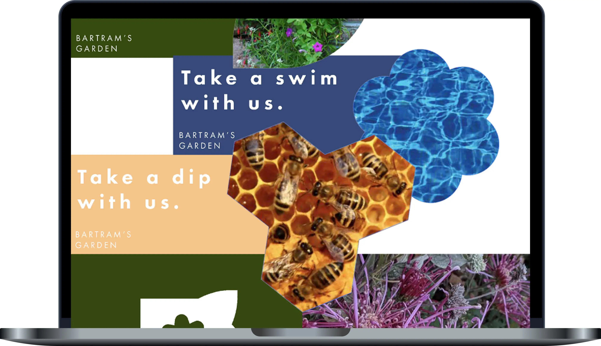
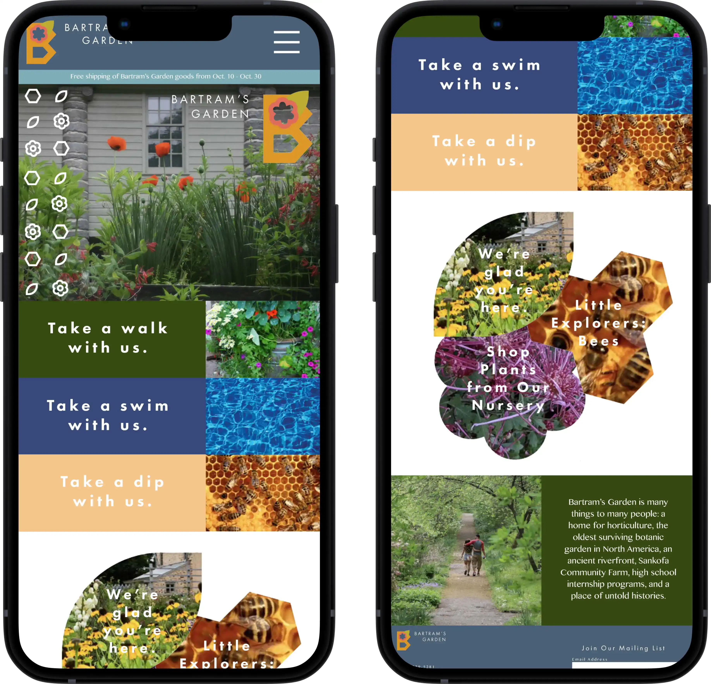
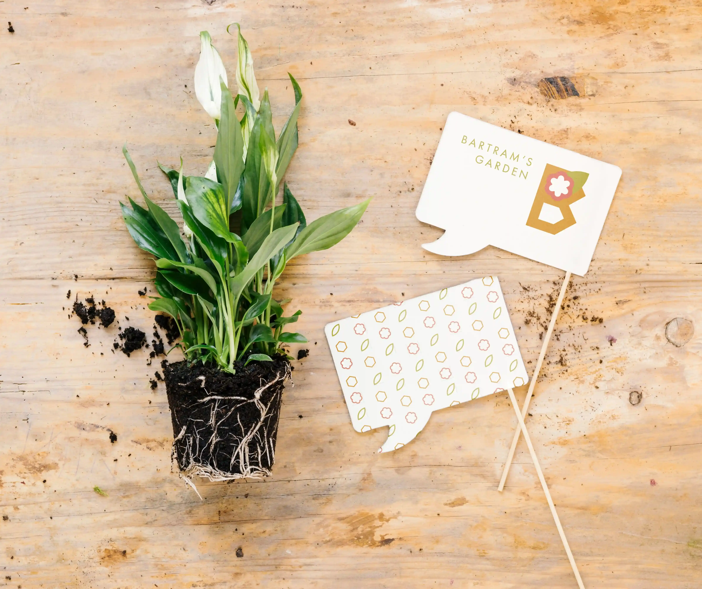
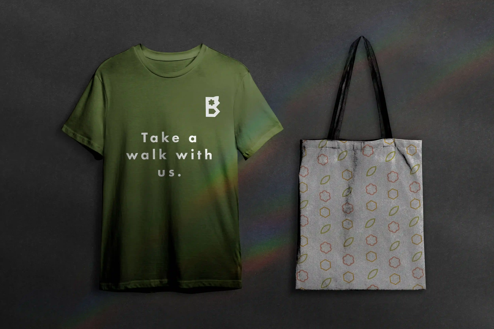
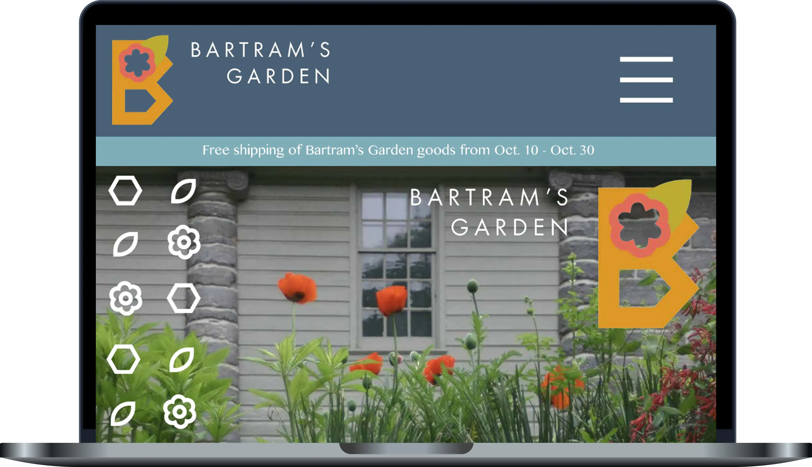
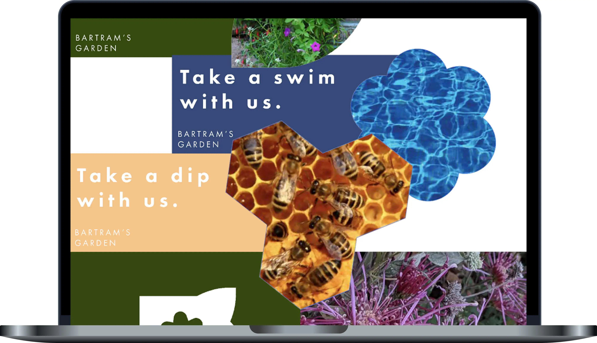
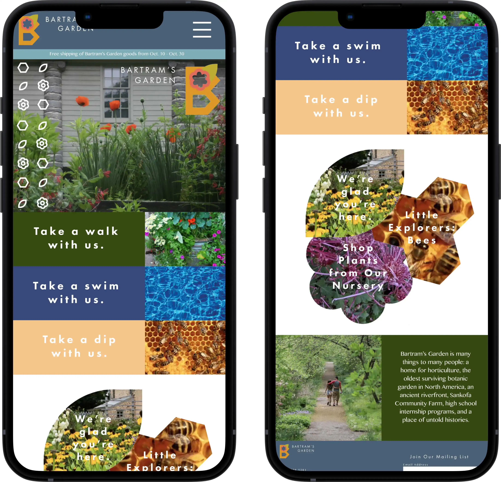
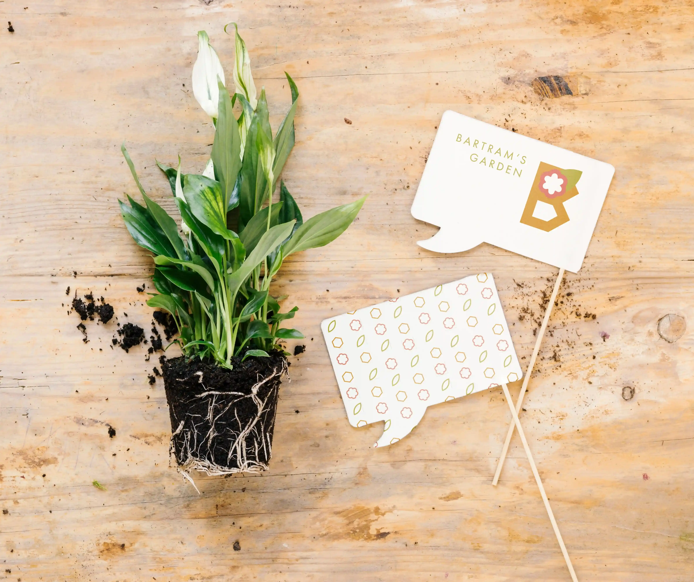
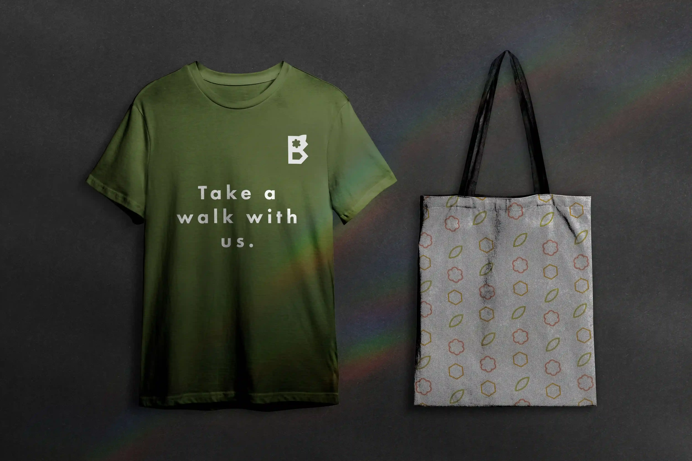

Bartram's Garden is the oldest surviving botanical garden in North America. It is located in
Southwest Philadelphia, Pennsylvania. This project aims to give it a new brand identity,
including but not limited to a new logo, website, merchandise, and more.
Process
Since Bartram's Garden is involved with horticulture and apiculture, those two elements were taken into
consideration when designing a new logo. The hexagon, flower, and leaf motifs are used repeatedly
throughout the brand. Items such as flyers, merchandise, and environmental branding are included to enhance
the authenticity of the design.

 








